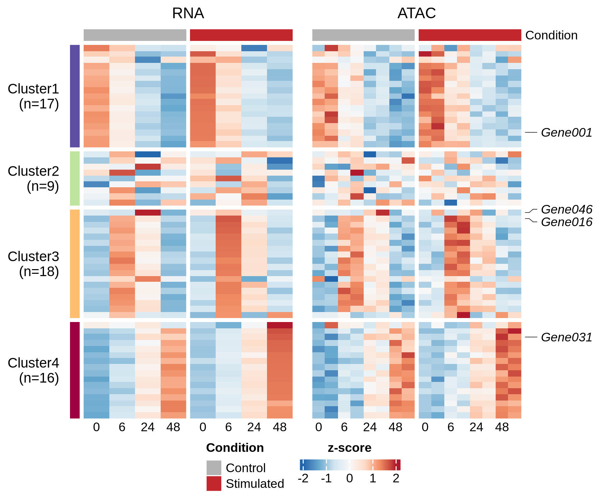
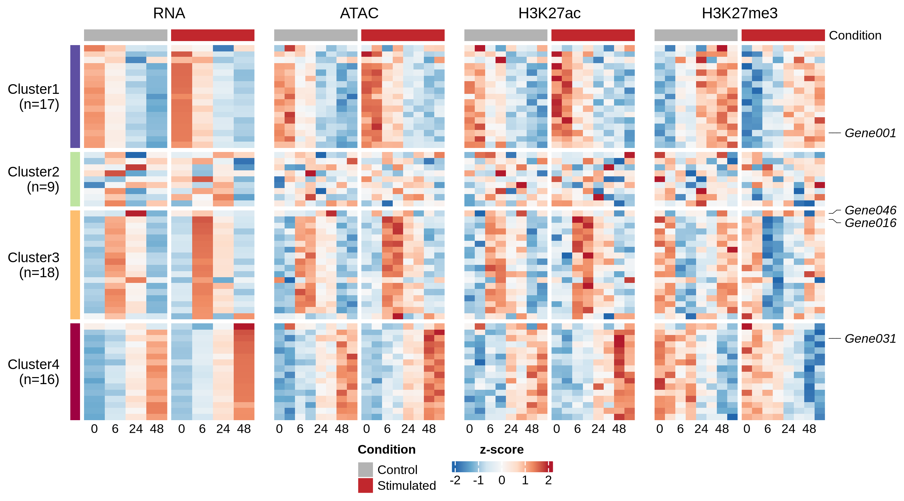
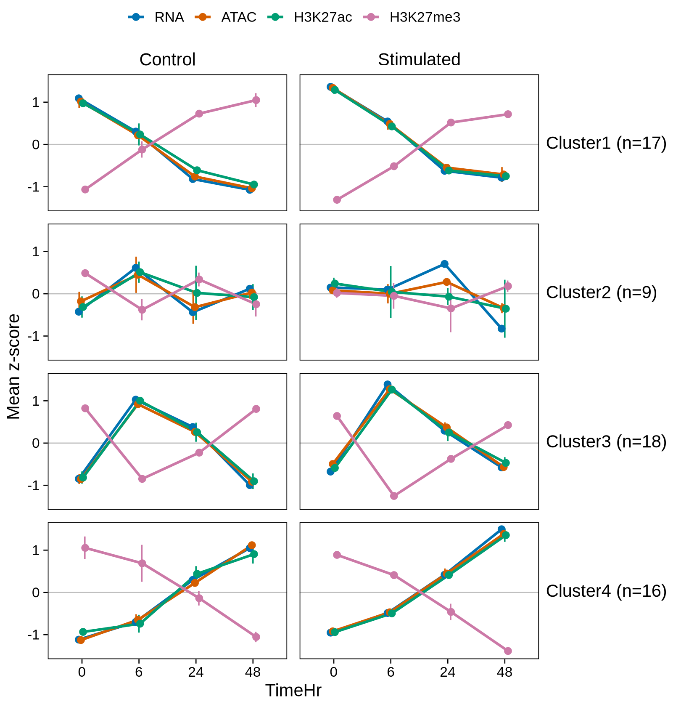

Multi-omics analysis
Two layers: dual_heatmap()
dual_heatmap() compares two assays in a shared row order. The primary layer, often RNA, defines the module structure. The secondary layer, such as ATAC or CUT&RUN, is aligned by gene and shown beside the primary layer.
rna_obj <- longitudinal_cluster(
rna,
meta,
sample_col = "SampleID",
time_col = "TimeHr",
group_col = "Genotype",
k = 10
)
dual_heatmap(
primary = rna_obj,
secondary = atac,
primary_name = "RNA",
secondary_name = "ATAC",
gene_of_secondary = function(id) sub("^.*_", "", id),
aggregate = "mean",
label_features = c("Sox2", "Pax6"),
file = "rna_atac_heatmap.pdf"
)
When multiple secondary features map to one gene, aggregate = "mean" averages them and aggregate = "top" keeps the strongest feature.
Any number of layers: multi_heatmap() and multi_lineplot()
For more than two assays, pass a named list of layers to multi_heatmap(). The example below adds two simulated histone layers to the RNA and ATAC data above: an activating mark (H3K27ac) that follows expression and a repressive mark (H3K27me3) that mirrors it. The figures are produced by examples/example_moduleviz_gallery.R.
as_regions <- function(m, sign = 1, sd = 0.5) {
out <- sign * m + matrix(rnorm(length(m), sd = sd), nrow = nrow(m))
rownames(out) <- paste0("region", seq_len(nrow(m)), "_", rownames(m))
out
}
layers <- list(
RNA = obj,
ATAC = atac,
H3K27ac = as_regions(mat),
H3K27me3 = as_regions(mat, sign = -1)
)
multi <- multi_cluster(
layers,
meta = meta, sample_col = "SampleID", time_col = "TimeHr",
group_col = "Condition"
)
multi_heatmap(
multi,
label_features = c("Gene001", "Gene016", "Gene031", "Gene046"),
show_column_names = FALSE,
file = "multi_heatmap.pdf"
)
multi_lineplot(multi, file = "multi_lineplot.pdf")
Each panel is one data type; every row is one gene across all four layers, in the RNA module order. One z-score legend covers every panel, and each panel keeps its own sample annotation bars.

multi_lineplot() draws one line per layer in each module. Here ATAC and H3K27ac follow expression and H3K27me3 runs opposite to it, as simulated.
Useful options:
cluster_by = "joint"clusters the concatenated profiles of all layers, so a module groups genes whose expression and chromatin trajectories agree.gene_set = "reference"keeps every gene of the reference layer and draws layers without that gene in grey.layer_gapsets the space between panels (10 mm by default).